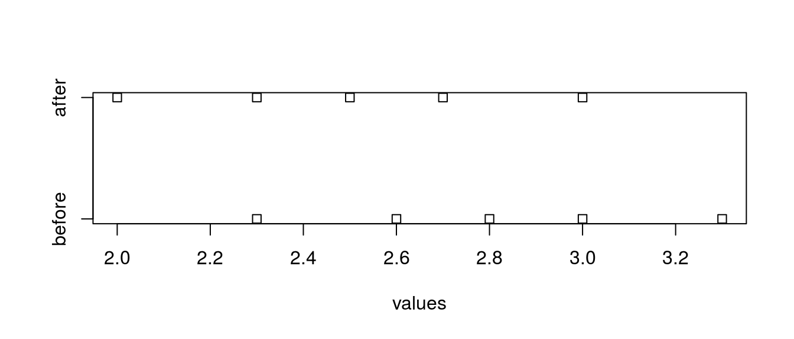
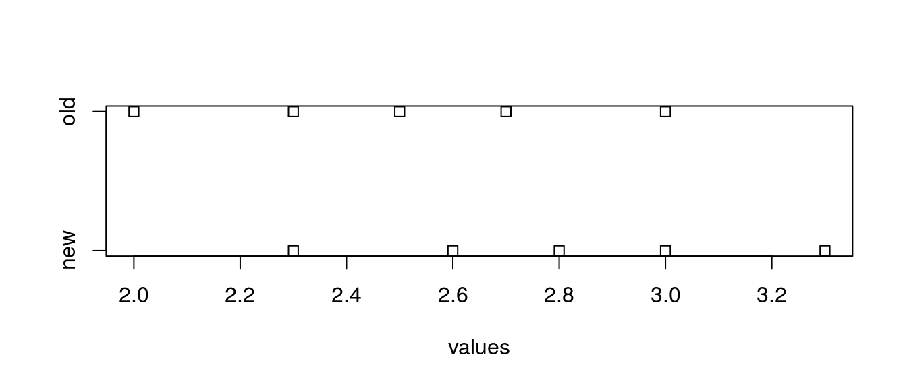
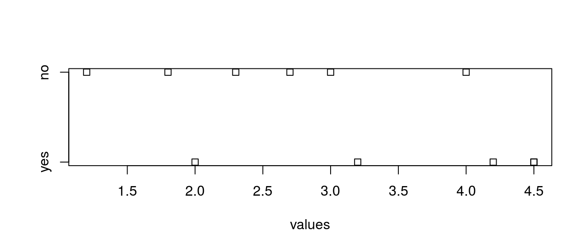
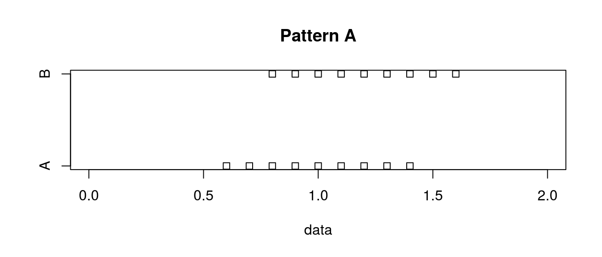
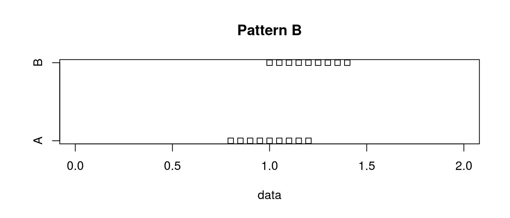
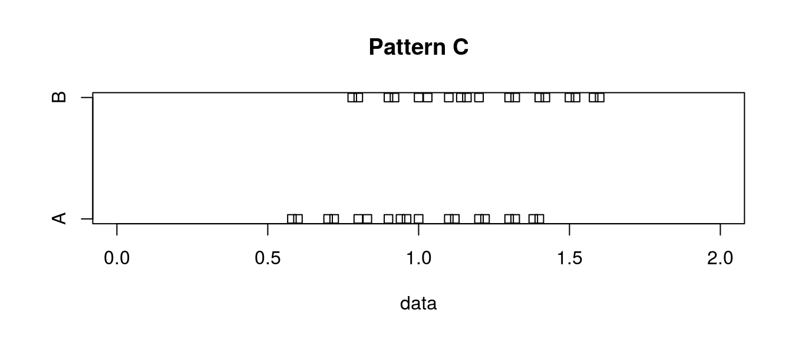
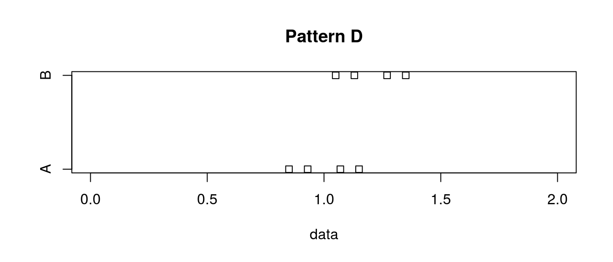

第2章 例題・演習解答例
本資料は『ソフトウェアメトリクス統計分析入門 』(以降、テキストと記載)の第2章の例題をR で解いた際の解答例を示したものです。また、R Markdown を使うメリットを示すための一手段として作成していますので、テキストにおける計算方法とは異なる部分もあります。本資料で使用しているデータの入手に関してはテキストにてご確認下さい。
本資料がHTML形式の場合、R のコードを参照するには右側にある[Code]ボタンをクリックして下さい。なお、JavaScriptは必ずOnにしてご覧下さい。
なお、R のコーディングはいわゆるモダンなコーディングにはなっていません。
例題 2.1
ある組織にて改善活動を行い、改善前と後のそれぞれ5つのプロジェクトの欠陥密度のデータがあります。 改善の結果として、たしかに欠陥密度が下がって品質が向上し、効果があったといえるでしょうか。それとも、たまたまの結果と判断せざるをえないでしょうか。
データの設定
本例題で利用するデータは予めCSVファイルとして保存されているものとします。
x
データの変換
読み込んだデータは2変数になっていますので、以下のように1変数と因子の形（Tidyデータ）に変換しておきます。
x.stacked <- stack(x)
colnames(x.stacked) <- c("values", "group")
x.stacked
検定
変換したデータを用いて、その分布を確認し等分散か否かをF検定stats::var.testで確認します。
stripchart(values ~ group, data = x.stacked)
var.test(x$before, x$after, alternative = "two.sided")##
## F test to compare two variances
##
## data: x$before and x$after
## F = 1, num df = 4, denom df = 4, p-value = 1
## alternative hypothesis: true ratio of variances is not equal to 1
## 95 percent confidence interval:
## 0.1041175 9.6045299
## sample estimates:
## ratio of variances
## 1F検定の結果、帰無仮説（\(H_0\)：分散に差がない）は棄却されなかったので、2つのデータは等分散と見なしStudentのt検定を用います。
t.test(values ~ group, alternative = "less", var.equal = TRUE, data = x.stacked)##
## Two Sample t-test
##
## data: values by group
## t = 1.2457, df = 8, p-value = 0.8759
## alternative hypothesis: true difference in means is less than 0
## 95 percent confidence interval:
## -Inf 0.7478385
## sample estimates:
## mean in group before mean in group after
## 2.8 2.5Studentのt検定の結果、帰無仮説（\(H_0\)：平均値の差はない）は棄却されなかったので改善前後のデータに有意差があるとは言えません。
最近では等分散性の検定（F検定）を行わずウェルチのt検定を行う方が妥当 だと言われています。
t.test(values ~ group, alternative = "less", var.equal = FALSE, data = x.stacked)##
## Welch Two Sample t-test
##
## data: values by group
## t = 1.2457, df = 8, p-value = 0.8759
## alternative hypothesis: true difference in means is less than 0
## 95 percent confidence interval:
## -Inf 0.7478385
## sample estimates:
## mean in group before mean in group after
## 2.8 2.5等分散性に加えて正規性も仮定しない場合にはブルンナー=ムンツェル検定（Brunner-Munzel Test）を使うのが妥当 だとされています。R でブルンナー=ムンツェル検定（Brunner-Munzel Test）を行うにはlawstatパッケージをインストールしてください。
lawstat::brunner.munzel.test(x$before, x$after)##
## Brunner-Munzel Test
##
## data: x$before and x$after
## Brunner-Munzel Test Statistic = -1.2536, df = 8, p-value = 0.2454
## 95 percent confidence interval:
## -0.1247021 0.6847021
## sample estimates:
## P(X<Y)+.5*P(X=Y)
## 0.28
結論
平均値の差の検定を行った結果、帰無仮説（\(H_0\)：平均値の差がない）は棄却されず改善活動の効果があったとは言えません。
例題 2.2
ある組織にて、昨年度までの欠陥密度の基準値が2.8だったとします。 基準値は過去のデータから異常値などを除いて算出した平均とします。そして、改善活動を行い、改善後の5 つのプロジェクトの欠陥密度のデータがあります。 改善の結果として、たしかに欠陥密度が下がって品質が向上し、効果があったといえるでしょうか。それとも、たまたまの結果と判断せざるをえないでしょうか。
データの設定
本例題で利用するデータの数は多くないので、直接、コードで変数を設定します。
ref <- c(2.8) # 欠陥密度の基準値
dd <- c(2.8, 2.4, 2.2, 2.5, 2.6) # 改善後の欠陥密度
検定
例題2.1と異なり固定的な基準値\((\mu_0 = 2.8)\)とデータの平均値の差の検定となりますので、1標本t検定の手法を用います。利用する関数は例題2.1と同じですが、引数の指定により1標本t検定が実施できます。stats::t.testの詳細に関してはhelpを参照して下さい。
1標本t検定の対立仮説（\(H_1\)）は基準値を\(\mu_0\)、比較する平均値を\(\mu\)とした場合、以下の3通りが考えられます。
- \(\mu \neq \mu_0\) （帰無仮説 \(H_0 : \mu = \mu_0\)）
- \(\mu < \mu_0\) （帰無仮説 \(H_0 : \mu \geq \mu_0\)）
- \(\mu > \mu_0\) （帰無仮説 \(H_0 : \mu \leq \mu_0\)）
設問として「効果があったと言えるか？」なので、欠陥密度の平均値\(\mu\)が基準値\(\mu_0\)を下回るかどうか、すなわち、\(\mu < \mu_0\)（帰無仮説 \(H_0 : \mu \geq \mu_0\)）となるかを検定します。
# 返り値をinline chunkで利用するために一度、変数に代入する
result.t.test <- t.test(dd, alternative = "less", mu = ref)
result.t.test##
## One Sample t-test
##
## data: dd
## t = -3, df = 4, p-value = 0.01997
## alternative hypothesis: true mean is less than 2.8
## 95 percent confidence interval:
## -Inf 2.713185
## sample estimates:
## mean of x
## 2.5検定の結果 \(p = 0.019971\)、\(95\%\)信頼区間は\((-\infty{}, 2.7131847)\)となり、帰無仮説は棄却されました。
結論
1標本のt検定の結果、帰無仮説（\(H_0 : \mu \geq \mu_0\)）は棄却され改善活動は効果があったと言えます。
演習 2.1
あるアウトソース先から100個のモジュールが納品されました。納品されたモジュールの品質を確認するために10個のモジュールをサンプリングして受入確認テストを実施しました。 その結果、各モジュールの欠陥密度は以下のとおりでした。
欠陥密度： 2.8, 5.2, 5.3, 4.7, 4.8, 5.8, 4.0, 2.2, 2.1, 3.5
この組織ではプロジェクトトータルの欠陥密度の標準値が3.0 となっており、今回納品されたモジュール全体の平均がその組織標準を超えていそうならば受入はせず、品質を高めてから再納品してもらうことを考えています。 そのためにはアウトソース先にも納得できる形で、判断の根拠を示す必要があります。受入の許可か拒否か、どちらが妥当な判断といえるでしょうか。
データの設定
本演習で利用するデータの数は多くなので、直接、Rのコードで変数として設定します。
ref <- c(3.0) # 標準値
dd <- c(2.8, 5.2, 5.3, 4.7, 4.8, 5.8, 4.0, 2.2, 2.1, 3.5) # 欠陥密度
検定
固定的な基準値に対してサンプリングデータの平均値に差があるかどうかを確認しますので、例題2.2と同じ1標本t検定を用います。対立仮説（\(H_1\)）と帰無仮説（\(H_0\)）については省略します。
# 返り値をinline chunkで利用するために一度、変数に代入する
result.t.test <- t.test(dd, alternative = "less", mu = ref)
result.t.test##
## One Sample t-test
##
## data: dd
## t = 2.4647, df = 9, p-value = 0.9821
## alternative hypothesis: true mean is less than 3
## 95 percent confidence interval:
## -Inf 4.813488
## sample estimates:
## mean of x
## 4.04検定の結果\(p = 0.9820604\)、95%信頼区間は(\(-\infty{}, 4.8134877\))となり帰無仮説は棄却されませんでした。
結論
検定の結果、基準値より納入されたモジュールの欠陥密度の平均値が小さいとは言えません。したがって、受入れは基準に達しているとは言いがたく受入れ拒否と見なせます。
演習 2.2
テスト技法の改善を行いました。実験として5つのモジュールに対して、新旧2つの技法を用いてテストを行い、以下の欠陥密度のデータを得ました。 新技法は欠陥検出能力が向上したといえるでしょうか。
データの設定
本演習で利用するデータは予めCSVファイルとして保存されているものとします。
x
データの確認
x.stacked <- stack(x)
stripchart(values ~ ind, data = x.stacked)
検定
# 返り値をinline chunkで利用するために一度、変数に代入する
result.t.test <- t.test(x$new, x$old, alternative = "greater", paired=TRUE)
result.t.test <- t.test(values ~ ind, data = x.stacked, alternative = "greater", paired=TRUE)
result.t.test##
## Paired t-test
##
## data: values by ind
## t = 2.7386, df = 4, p-value = 0.02599
## alternative hypothesis: true difference in means is greater than 0
## 95 percent confidence interval:
## 0.06646789 Inf
## sample estimates:
## mean of the differences
## 0.3検定の結果\(p = 0.0259898\)、95%信頼区間は\((0.0664679, \infty{})\)となり、帰無仮説は棄却されました。
結論
帰無仮説が棄却されましたので、平均値の差に有意差があり新技法は欠陥検出能力が向上しているといえます。
演習 2.3
開発時の品質状況を示すメトリクスとリリース後の品質問題の有無の関連性を示すために、リリースして1年以上経過したプロジェクトを品質問題の有無の2つに分けて、それぞれの開発終了時のシステムテストでの欠陥密度のデータを比較することにしました。 得られたデータは以下のとおりです。システムテストでの欠陥密度とリリース後の品質問題の有無の関連性はあるといえるでしょうか。
データの設定
本演習で利用するデータは予めCSVファイルとして保存されているものとします。
x
データの変換
本演習のデータは、「欠陥あり」と「欠陥なし」は異なるプロジェクトであることから独立サンプルのt検定（stats::t.test）にて有意差を確認します。
読み込んだデータは2変数のデータフレームになっていますので、独立サンプルt検定を行うために以下のように1変数と因子の形に変換しておきます。
x.stacked <- stack(x)
# 念の為にNAを含むデータを外す
x.stacked <- na.omit(x.stacked)
x.stacked
データの確認
stripchart(values ~ ind, data = x.stacked)
検定
変換したデータを用いて、その分布を確認し等分散か否かをF検定stats::var.testで確認します。
# var.test(x$yes, x$no, alternative = "less")
var.test(x$yes, x$no, alternative = "two.sided")##
## F test to compare two variances
##
## data: x$yes and x$no
## F = 1.2258, num df = 4, denom df = 5, p-value = 0.8106
## alternative hypothesis: true ratio of variances is not equal to 1
## 95 percent confidence interval:
## 0.1659257 11.4793461
## sample estimates:
## ratio of variances
## 1.22584F検定の結果、帰無仮説は棄却されなかったので、2つのデータは等分散とは言えないのでWelchのt検定stats::t.testを用います。
# 返り値をinline chunkで利用するために一度、変数に代入する
result.t.test <- t.test(values ~ ind, alternative = "two.sided",
var.equal = FALSE, data = x.stacked)
result.t.test##
## Welch Two Sample t-test
##
## data: values by ind
## t = 1.8845, df = 8.2404, p-value = 0.09516
## alternative hypothesis: true difference in means is not equal to 0
## 95 percent confidence interval:
## -0.2566094 2.6166094
## sample estimates:
## mean in group yes mean in group no
## 3.68 2.50検定の結果\(p = 0.0951584\)、95%信頼区間は\((-0.2566094, 2.6166094)\)となり、帰無仮説は棄却されませんしたので平均値の差に有意差があるとは言えません。
結論
検定の結果、システムテストでの欠陥密度とリリース後の品質問題の有無の「関連性はある」とも言えません。
演習 2.4
ベースとなるシステムに改良を加えました。そして。改良システムのユーザビリティテストを行い、ベースシステムとの比較で以下の5段階評価を行いました。
1：非常に使いづらい
2：使いづらい
3：あまり変わらない
4：使いやすい
5：非常に使いやすい被験者10名のそれぞれの評点は以下のとおりです。改良システムはベースシステムに比べて使いやすくなったといえるでしょうか。
データの設定
本演習で利用するデータは予めCSVファイルとして保存されているものとします。
x
検定
演習2.2と同じで固定的な基準値(3:あまり変わらない)に対するアンケート結果の平均の差があるかどうかを見ることから「1標本t検定」を用います。Rで1標本t検定を行う場合、t.test {stats}を使い、対立仮説（帰無仮説）は基準値(\(\mu_0\))に対するアンケートの平均値(\(\mu\))として以下の3通りが考えられます。
- \(\mu \neq \mu_0\) （帰無仮説 \(\mu = \mu_0\)）
- \(\mu < \mu_0\) （帰無仮説 \(\mu \geq \mu_0\)）
- \(\mu > \mu_0\) （帰無仮説 \(\mu \leq \mu_0\)）
設問として「使いやすくなったと言えるか？」なので、アンケートの5段階評価の平均値がベースシステムの評価の平均値より大きい、すなわち\(\mu > \mu_0\)（帰無仮説 \(H_0: \mu \leq \mu_0\)）となるかを検定で確認します。
# 返り値をinline chunkで利用するために一度、変数に代入する
result.t.test <- t.test(x$evaluation, alternative = "greater", mu = 3.0)
result.t.test##
## One Sample t-test
##
## data: x$evaluation
## t = 2.3333, df = 9, p-value = 0.02225
## alternative hypothesis: true mean is greater than 3
## 95 percent confidence interval:
## 3.150066 Inf
## sample estimates:
## mean of x
## 3.7検定の結果p値は\(p = 0.0222518\)であり帰無仮説（\(H_0\)）は棄却され、平均値は\(\mu = 3.7\)、95%信頼区間は\((3.1500661, \infty{})\)となりました。
結論
1標本t検定の結果、帰無仮説（\(H_0\)）は棄却され、改良システムは使いやすくなったと言えます。
演習 2.5
図2.16 に4 パターンのA とB の2 群データを示します。 いずれのパターンも平均はA群が1.2でB群が1.0 なっており、 平均の差は0.2で統一されています。 また、A群とB群のデータ数と標準偏差（n－1で割ったもの）の値も同じです。 グラフはA群とB群のデータ分布の違いを可視化しています。4つのパターンの違いは表2.5のとおりです。
(表2.5 4パターンのデータセットの各種指標の違い)
パターン 平均値の差 データ数 標準偏差 パターン1 0.2 9 0.27 パターン2 0.2 9 0.14 パターン3 0.2 18 0.27 パターン4 0.2 4 0.14 これらの数値を使えばt値およびp値を算出して有意差の違いを確認できますが、まずは図2.16のグラフだけを見て、パターン1と比較して、パターン2～4のp値の大きさの違いを予想してみてください。 そしてその後それぞれのパターンの検定結果のp値を算出して、予想が合っていたかを確認してください．
データの設定
本演習で利用するデータは予めCSVファイルとして保存されているものとします。
データの確認
各パターンのデータ分布、平均値、標準偏差を以下に示しておきま。
# stripchart(data.1 ~ group.1, xlim = c(0, 2), data = na.omit(x[1:2]))
# stripchart(data.2 ~ group.2, xlim = c(0, 2), data = na.omit(x[3:4]))
# stripchart(data.3 ~ group.3, xlim = c(0, 2), data = na.omit(x[5:6]))
# stripchart(data.4 ~ group.4, xlim = c(0, 2), data = na.omit(x[7:8]))
# NAを削除するためにna.omit {stats}、NULL因子を削除するためにdroplevels {base}を
# 用います
stripchart(data ~ group, xlim = c(0, 2), data = droplevels(na.omit(x[1:2])),
main = "Pattern A")
with(droplevels(na.omit(x[1:2])), tapply(data, INDEX = group, FUN = mean))## A B
## 1.0 1.2with(droplevels(na.omit(x[1:2])), tapply(data, INDEX = group, FUN = sd))## A B
## 0.2738613 0.2738613stripchart(data ~ group, xlim = c(0, 2), data = droplevels(na.omit(x[3:4])),
main = "Pattern B")
with(droplevels(na.omit(x[3:4])), tapply(data, INDEX = group, FUN = mean))## A B
## 1.0 1.2with(droplevels(na.omit(x[3:4])), tapply(data, INDEX = group, FUN = sd))## A B
## 0.1369306 0.1369306stripchart(data ~ group, xlim = c(0, 2), data = droplevels(na.omit(x[5:6])),
main = "Pattern C")
with(droplevels(na.omit(x[5:6])), tapply(data, INDEX = group, FUN = mean))## A B
## 1.003889 1.203889with(droplevels(na.omit(x[5:6])), tapply(data, INDEX = group, FUN = sd))## A B
## 0.2654882 0.2654882stripchart(data ~ group, xlim = c(0, 2), data = droplevels(na.omit(x[7:8])),
main = "Pattern D")
with(droplevels(na.omit(x[7:8])), tapply(data, INDEX = group, FUN = mean))## A B
## 1.0 1.2with(droplevels(na.omit(x[7:8])), tapply(data, INDEX = group, FUN = sd))## A B
## 0.1351542 0.1351542
 CC BY-NC-SA 4.0 , Sampo Suzuki [2018-03-17 15:26(JST)]
CC BY-NC-SA 4.0 , Sampo Suzuki [2018-03-17 15:26(JST)]